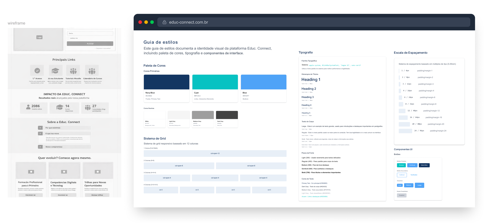

Etapas do meu processo de UI Design
IMERSÃO
Mapeamento de fluxos de portais públicos, perfis de usuários e análise de atritos na primeira experiência.
DEFINIÇÃO
Identificação das necessidades: contexto institucional, links essenciais, instruções rápidas e clareza visual.
ARQUITETURA DA INFORMAÇÃO
Ordenação lógica: apresentação do serviço → login → principais acessos → dúvidas → orientações.
DIREÇÃO VISUAL
Linguagem institucional, cores de confiança, hierarquia clara e ícones de orientação.

Continuação das etapas do processo de design:
Design de Interface (UI Design):
- Aplicação do guia de estilos nos layouts
- Criação das telas finais (high-fidelity)
- Definição de estados de componentes (hover, foco, ativo, erro)
- Ajustes de tipografia, espaçamento e hierarquia visual
- Consistência visual entre páginas e componentes
Prototipação e Validação:
- Criação de fluxos navegáveis
- Simulação de comportamentos reais (login, navegação, accordion, botões)
- Avaliação de acessibilidade (contraste, legibilidade, foco)
- Lista de ajustes e melhorias
- Versão refinada do protótipo
Defesa de Design e Handoff:
- Apresentação do problema, objetivos e solução proposta
- Justificativa das decisões de UX e UI
- Coleta de feedbacks finais
- Arquivo final organizado para dev
- Guia rápido de implementação
- Assets exportáveis (ícones, imagens)